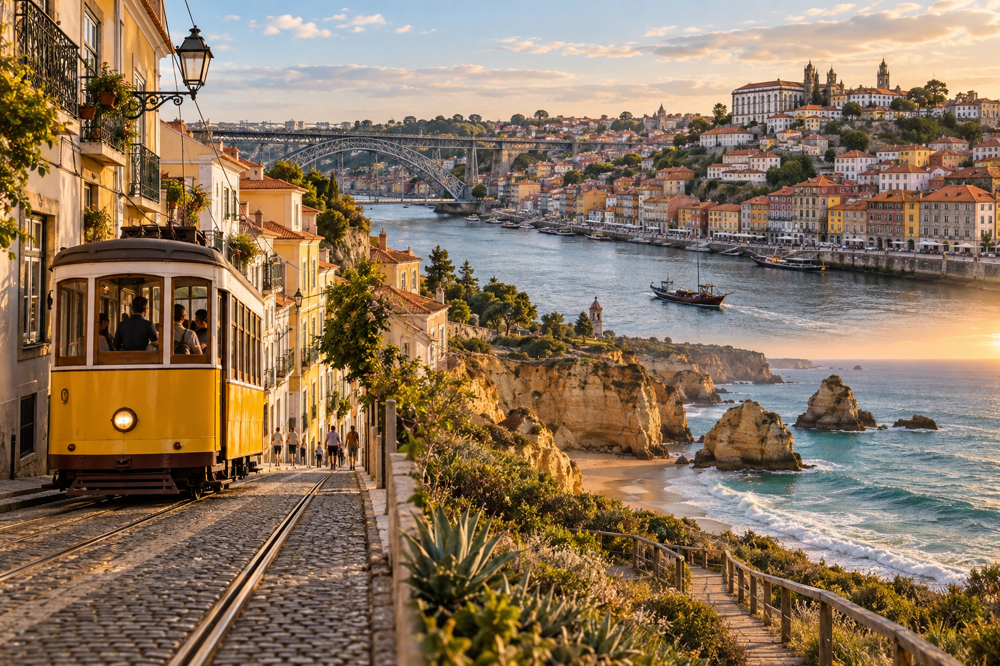
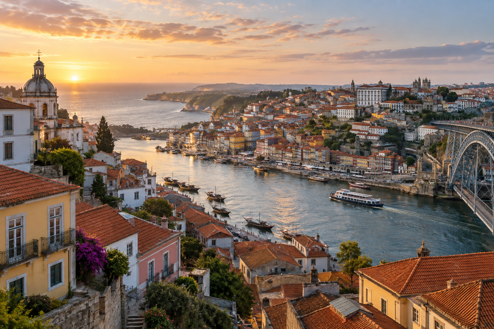

Portugal Travel Guide for First-Time Visitors
Meta Description: Plan your first Portugal trip with tips on Lisbon, Porto, Sintra, Algarve, trains, costs, entry rules, and realistic itineraries.
Planning your first trip to Portugal can look simple at the start. Lisbon is here, Porto is a few hours north, Sintra sits close to Lisbon, and the Algarve covers the sunny south. Then you start planning nights, trains, flights, day trips, hotels, and rental cars. Suddenly, fitting everything into one trip becomes much harder.
When I compare first-time Portugal routes for RoamPlans, I see the same planning problem again and again. Travelers often choose destinations before working out how many usable days they really have. A seven-night vacation does not always mean seven full sightseeing days. Arrival time, hotel changes, train trips, airport transfers, and early departures can take away a large part of the trip.
That is why this Portugal travel guide for first-time visitors starts with decisions rather than a long list of attractions. You will learn which places make sense for your first trip, how much time to give them, when a train works better than a car, and when adding another destination may make your trip worse instead of better.
Portugal at a Glance

| Travel Detail | What to Know |
|---|---|
| Capital | Lisbon |
| Language | Portuguese |
| Currency | Euro (€) |
| Main first-time cities | Lisbon and Porto |
| Popular day trip | Sintra |
| Major wine region | Douro Valley |
| Main beach region | Algarve |
| Typical first trip | 7–10 days |
| Main intercity transport | Train and bus |
| Driving side | Right |
| Best airport for many first trips | Lisbon Airport (LIS) |
| Other useful airports | Porto (OPO) and Faro (FAO) |
| Portugal plug type | European-style Type C and F |
| Currency for U.S. travelers | Use euros rather than U.S. dollars |
Portugal also includes Madeira and the Azores, but this guide focuses mainly on mainland Portugal. For a first trip, Lisbon, Sintra, Porto, the Douro Valley, and the Algarve form a much easier route to plan.
How Should You Plan a First Trip to Portugal?
For most first-time visitors, the best approach is to choose two main bases first and then add extra places only when your schedule allows.
Lisbon and Porto make the strongest starting pair. Both cities work well without a rental car, and Portugal's rail network connects them. From Lisbon, you can add Sintra. From Porto, you can visit the Douro Valley. Travelers with more time can then continue south to the Algarve.
The mistake is trying to add every famous place simply because Portugal looks small on a map.
A better first question is:
How many full days do I actually have?
Then decide where those days will give you the most value.
Which Portugal Trip Is Right for You?
This simple framework can help before you book hotels.
| If You Have | Good First-Trip Structure | What I Would Avoid |
|---|---|---|
| 3–4 days | Lisbon OR Porto | Crossing the country |
| 5 days | Lisbon + Porto | Adding Algarve |
| 7 days | Lisbon + Sintra + Porto | Too many overnight stops |
| 10 days | Lisbon + Sintra + Porto + Douro or Algarve | Trying to cover every region |
| 14 days | Lisbon + Porto + Douro + central stop + Algarve | Adding islands unless they are a priority |
These are planning frameworks, not fixed itineraries.
A traveler interested in beaches may spend less time in Porto and more time in the Algarve. Someone interested in history, food, architecture, and city life may prefer Lisbon, Sintra, Porto, and the Douro Valley.
The key is to build the route around your travel style, not around the number of pins you can place on a map.
Where Should First-Time Visitors Go in Portugal?

Five places fit especially well into a classic first Portugal trip:
Lisbon, Sintra, Porto, the Douro Valley, and the Algarve.
They do not all need to appear on the same itinerary.
Lisbon
Lisbon is the most practical starting point for many first-time travelers.
Portugal's capital combines historic neighborhoods, river views, tiled buildings, viewpoints, museums, cafés, markets, and easy day trips. It is also home to Portugal's largest international airport, which makes it a logical arrival point for many U.S. travelers.
For a first visit, Lisbon works best as a base, not as a place to rush through.
You can explore central areas such as Baixa and Chiado, walk through Alfama, visit Belém, and use one additional day for Sintra.
Lisbon is also hilly. That matters more than it sounds when you choose a hotel. A property that looks close on a map may involve steep streets or cobbled paths.
For most first-time visitors, three nights is a useful starting point.
Sintra
Sintra gives you one of Portugal's easiest high-value day trips.
The town sits outside Lisbon and is known for its historic center, wooded hills, palaces, estates, and Pena Palace. Portugal's official tourism site even presents Sintra through a one-day itinerary, which fits how many first-time visitors use it.
The planning mistake here is trying to see every major attraction in a few hours.
Distances, queues, hills, and transport between sites take time.
For most first visits, I would choose a smaller number of places and enjoy them instead of treating Sintra like a checklist.
You normally do not need to change hotels for Sintra. Keeping your Lisbon accommodation and visiting for the day makes the route simpler.
Porto
Porto is smaller than Lisbon, but that does not mean it should be treated as a quick stop.
The city sits along the Douro River and is known for Ribeira, historic streets, tiled buildings, bridges, food, port wine, and river views.
Its compact center makes it possible to cover a lot on foot, although Porto also has steep areas.
For most first-time visitors, two full days works well.
If the Douro Valley is part of your plan, Porto can become a three- or four-night base.
Douro Valley
The Douro Valley offers a major change from city travel.
Instead of neighborhoods and museums, you get vineyards, river scenery, terraced slopes, smaller communities, and wine estates.
You can visit it as a day trip from Porto or stay overnight.
A day trip works well if your Portugal schedule is tight. An overnight stay makes more sense if scenery, wine, and slower travel matter more to you than fitting another city into the itinerary.
Transport choice also depends on the experience you want. Train, organized trip, and rental car can all work, but they create very different days.
That question belongs in our separate Douro Valley Guide, so this country guide will not repeat all of those details.
Algarve
The Algarve changes the character of a Portugal trip.
This southern region is known for Atlantic beaches, cliffs, caves, coastal towns, and resort areas. Lagos, Faro, Tavira, Albufeira, and Portimão are among the names you will often see while planning.
The Algarve makes more sense once you have around 10 days or longer.
That is because adding southern Portugal creates extra travel and another accommodation base.
If your trip is only five or seven days, Lisbon, Sintra, and Porto usually create a cleaner first route.
If beaches and coastal scenery are one of your main reasons for choosing Portugal, the decision changes. In that case, you may want to remove another destination and protect several days for the Algarve.
Lisbon vs Porto vs Algarve vs Douro Valley
Instead of asking which destination is best, ask what role each place serves.
| Destination | Best For | Typical First-Trip Role | Car Needed? |
|---|---|---|---|
| Lisbon | History, city life, food, day trips | Main base | No |
| Sintra | Palaces, estates, scenery | Day trip | No |
| Porto | Riverfront, food, wine, historic center | Main base | No |
| Douro Valley | Vineyards and scenery | Day trip or overnight | Sometimes |
| Algarve | Beaches, cliffs and coastal stays | Multi-night base | Helpful for some routes |
This comparison matters because each destination solves a different travel need.
A first-time traveler who wants architecture and culture does not need the same route as someone whose main goal is beaches.
How Many Days Do You Need in Portugal?
For most first-time visitors, 7 to 10 days gives you a useful balance.
Five days can still work, but you need to stay focused.
Fourteen days gives you much more freedom to add a slower regional stop without moving every night.
Portugal in 5 Days
Keep this trip simple.
A practical first route is:
Lisbon + Porto
You can add Sintra if you are comfortable giving up part of your Lisbon time, but you should avoid adding the Algarve just because it looks close on a country map.
Portugal in 7 Days
Seven days gives you enough room for:
Lisbon + Sintra + Porto
You may also fit a Douro Valley day trip depending on your pace.
This is one of the cleanest first-time routes because you can do much of it by public transport.
Portugal in 10 Days
Ten days gives you several good choices.
One option is:
Lisbon + Sintra + Porto + Douro Valley + Algarve
But you still need to control your pace.
A better route for some travelers may be Lisbon, Sintra, Porto, and several nights in the Algarve without adding the Douro Valley.
There is no rule saying a 10-day trip must include every major region.
Portugal in 14 Days
Two weeks lets you slow down.
You can combine Lisbon, Sintra, Porto, the Douro Valley, a central Portugal stop, and the Algarve with fewer rushed transfers.
This is also where cities such as Coimbra or Évora become easier to add without damaging the main route.
Do Not Count Destinations. Count Usable Days.
This is one of the planning rules I use most often when reviewing an itinerary.
Suppose you have seven nights.
You arrive in Lisbon after an overnight flight from the United States. Your room may not be ready when you land. Later in the trip, you travel to Porto. Then you have another hotel check-in. On the final day, you may need to reach the airport early.
That is not seven full sightseeing days.
If you add five destinations to that trip, much of your time can turn into:
check out → station → train → local transport → hotel → check in → unpack.
A slower route can actually let you experience more.
That is why our separate How Many Days in Portugal Do You Need? guide will go deeper into travel days, nights, and route pacing.
Best First-Time Portugal Routes
Different travelers need different routes.
| Traveler Type | Route That Makes Sense |
|---|---|
| Classic first visit | Lisbon → Sintra → Porto |
| City + wine trip | Lisbon → Porto → Douro Valley |
| City + beach trip | Lisbon → Porto → Algarve |
| Slow first trip | Lisbon → Sintra → Porto |
| No-car trip | Lisbon → Sintra → Porto |
| Beach-focused trip | Lisbon → Algarve |
| Longer mainland trip | Lisbon → central Portugal → Porto → Algarve |
This is more useful than building one so-called perfect Portugal itinerary.
The best route depends on what you are willing to leave out.
Where Should You Fly Into Portugal?
Portugal has three airports that matter most for the mainland first-time routes in this guide.
Lisbon Airport (LIS)
Lisbon is the most flexible arrival point for a classic first trip.
It works well if you plan to start with Lisbon and Sintra before traveling north or south.
Porto Airport (OPO)
Porto can be a smart starting point for a north-to-south itinerary.
For example:
Porto → Lisbon → Algarve
This can reduce backtracking if your return flight leaves from a different airport.
Faro Airport (FAO)
Faro is the main airport for the Algarve.
It makes the most sense for a beach-focused trip or an itinerary that starts or finishes in southern Portugal.
Round Trip or Open-Jaw Flight?
This is one of the best questions to check before buying your U.S.–Portugal ticket.
A standard round trip may look like:
USA → Lisbon → USA
An open-jaw trip could look like:
USA → Porto
then
Lisbon → USA
or another combination based on your route.
An open-jaw ticket can remove the need to return to your arrival city just for the flight home.
Earth Trekkers uses the same logic in its Portugal planning, comparing a Lisbon loop with a point-to-point Porto-to-Lisbon route.
However, do not assume the open-jaw option is automatically cheaper. Compare both the airfare and the time you save.
For a first trip, saving half a travel day can sometimes matter more than saving a small amount on the flight.
Train or Rental Car in Portugal?
You do not need to rent a car for every Portugal trip.
If your route focuses on Lisbon, Sintra, and Porto, trains and local public transport can handle much of the trip.
A car becomes more useful when you want to explore rural areas, smaller towns, remote beaches, or several countryside stops in one day.
| Route or Area | Practical Choice for Many First-Timers |
|---|---|
| Lisbon → Porto | Train |
| Lisbon → Sintra | Train |
| Central Lisbon | Walk + public transport |
| Central Porto | Walk + public transport |
| Douro Valley | Train, tour or car |
| Algarve | Train/bus for some towns; car useful for wider exploring |
| Remote villages | Car |
Portugal's national rail operator, CP, currently lets travelers buy many tickets online up to 60 days before departure. It also sells advanced Promo fares on selected Alfa Pendular and Intercidades trains.
CP also advises travelers to buy through official CP channels because some third-party ticket websites are not official partners and may charge higher prices.
For first-time travelers, this is useful because it removes the need to rent a car simply to connect the major cities.
Best Time to Visit Portugal
Portugal can work in every season, but the best time depends on what you want to do.
For many first-time visitors, spring and early fall offer the easiest balance. The weather is often comfortable for walking, cities are active, and you can avoid some of the strongest summer heat.
Summer works well for beaches and long daylight hours. However, popular areas can feel busier, accommodation may cost more, and sightseeing in the middle of the day can be tiring.
Winter is quieter in many places. It can also be wetter, especially in northern Portugal.
Portugal by Season
| Season | What to Expect | Good For |
|---|---|---|
| Spring: March–May | Mild weather, greener scenery, some rain | Cities, road trips, sightseeing |
| Summer: June–August | Hotter, drier, busy in popular areas | Beaches, Algarve, long days |
| Fall: September–November | Warm start, cooler later, fewer summer crowds | Cities, wine regions, mixed trips |
| Winter: December–February | Cooler, wetter in some regions, quieter | City breaks, lower-season travel |
The calendar alone should not decide your trip.
Portugal stretches from the cooler north to the warmer south. Conditions in Porto can feel different from Lisbon, while the Algarve often has another weather pattern again.
Our separate Best Time to Visit Portugal guide will compare months, weather, crowds, costs, and regional differences in more detail.
Portugal Weather Changes by Region
One mistake first-time visitors make is treating Portugal as if the entire country has the same weather.
It does not.
Porto and Northern Portugal
Northern Portugal is usually cooler and receives more rain than the south.
Porto can be comfortable in spring and fall, but you should still prepare for changing weather.
A light rain layer can be useful even when the forecast looks good.
Lisbon and Central Portugal
Lisbon generally has mild winters and warm to hot summers.
Spring and fall can be especially comfortable for walking because many parts of Lisbon involve hills and exposed streets.
During hot summer afternoons, planning indoor stops and breaks can make sightseeing easier.
Algarve
The Algarve is known for warmer and drier conditions.
Summer is the main beach season, but spring and fall can also work well for travelers who care more about coastal walks and sightseeing than swimming.
One detail surprises some first-time visitors.
Portugal faces the Atlantic Ocean, not the Mediterranean Sea.
Ocean water can feel cooler than travelers expect, even when the air temperature is warm.
Douro Valley
The Douro Valley can become hot during summer.
Spring and fall can be easier for sightseeing, viewpoints, and vineyard visits.
The season also changes the appearance of the valley, so there is no single month that suits every traveler.
Where Should You Stay on Your First Portugal Trip?
For a first visit, location often matters more than having the largest room or the cheapest hotel.
A low hotel price can lose its value if you spend extra time reaching the places you want to see.
The goal is to stay somewhere that fits your daily plans.
Where to Stay in Lisbon
For first-time visitors, central Lisbon makes sightseeing easier.
Areas such as Baixa and Chiado give you good access to major sights, restaurants, public transport, and surrounding neighborhoods.
Alfama offers more historic character, but its steep streets can be difficult with heavy luggage.
Bairro Alto and nearby areas may appeal to travelers interested in nightlife, but noise can matter depending on the exact street.
The best Lisbon neighborhood therefore depends on four things:
- ✓Walking ability
- ✓Nightlife preference
- ✓Public transport access
- ✓How much you value quiet evenings
We will cover these choices fully in the separate Where to Stay in Lisbon guide.
Where to Stay in Porto
Central Porto also works well without a car.
Areas near Baixa make it easier to reach many sights on foot.
Ribeira puts you close to the Douro River and one of Porto's most famous areas, but steep streets can make walking back uphill harder.
Cedofeita can suit travelers looking for a slightly different city feel while staying close to central Porto.
Again, do not judge a hotel only by map distance.
A short distance can still include a steep climb.
Where to Stay in the Algarve
The Algarve requires a different decision because it is a large region rather than one city.
Your best base depends on whether you care most about:
- ✓Beaches
- ✓Nightlife
- ✓Quiet towns
- ✓Coastal scenery
- ✓Public transport
- ✓Road trips
- ✓Family-friendly areas
A traveler staying in Lagos may experience a very different Algarve trip from someone staying in Faro or Tavira.
For a short first trip, choose one base rather than changing towns every night.
How Much Does a Portugal Trip Cost?
Portugal can fit several travel budgets, but it should not automatically be treated as a cheap European destination.
Your final cost depends heavily on:
- ✓Travel season
- ✓Flight prices
- ✓Hotel location
- ✓Room standard
- ✓Number of destinations
- ✓Restaurant choices
- ✓Rental-car use
- ✓Paid attractions
- ✓Tours and day trips
Accommodation usually has one of the biggest effects on the total budget.
A central Lisbon hotel during a busy period can cost far more than a room in a smaller town during a quieter month.
Simple Daily Budget Framework
These ranges are better used for early planning than as fixed prices.
| Travel Style | Typical Daily Spending Pattern |
|---|---|
| Budget | Hostel or simple room, public transport, bakeries, casual meals, limited paid activities |
| Mid-range | Private hotel room, restaurants, trains, several paid attractions |
| Higher comfort | Central hotels, taxis, tours, premium dining, more flexible transport |
Instead of asking only:
Is Portugal cheap?
Ask:
What level of comfort do I want, and how many times will I change locations?
Moving often can increase transport costs, hotel costs, luggage storage needs, and lost time.
Where First-Time Travelers Often Overspend
Common areas include:
- ✓Booking accommodation too late
- ✓Renting a car for city days when it is not needed
- ✓Taking taxis for every short trip
- ✓Eating only beside major attractions
- ✓Buying several tours that cover similar places
- ✓Changing cities too often
- ✓Returning to the same airport because the flight looked cheaper
A cheaper flight is not always the cheaper trip if it adds another hotel night or a long transfer.
Our dedicated Portugal Trip Cost guide will break down accommodation, meals, transport, attractions, and sample trip budgets for different trip lengths.
What Food Should First-Time Visitors Try in Portugal?
Food can become a major part of a Portugal trip without requiring expensive restaurants.
Different regions have their own dishes, but several foods appear again and again in first-time travel planning.
Pastel de Nata
A pastel de nata is a small Portuguese custard tart.
You will see versions of it across the country.
Instead of searching for one single famous shop, try them in different bakeries and decide which style you prefer.
Bacalhau
Bacalhau means salted cod.
It appears in many Portuguese dishes and can be prepared in several ways.
You do not need to understand every version before your trip. Trying one traditional preparation is enough to introduce you to an important part of Portuguese food culture.
Francesinha
Francesinha is strongly associated with Porto.
It is a rich sandwich usually served with sauce and often fries.
It is much heavier than a normal sandwich, so it may work better as a main meal than a quick snack.
Seafood
Portugal's long Atlantic coast means seafood appears widely on menus.
Fish, shellfish, octopus, and grilled seafood dishes are common in many coastal areas.
Regional Food Matters
Do not expect the same specialties everywhere.
Lisbon, Porto, the Algarve, Alentejo, and the Douro region each have different food traditions.
Trying regional dishes gives your route another layer beyond sightseeing.
Understand the Couvert Before Your First Restaurant Meal
This is a small detail that can prevent confusion.
At some restaurants, bread, olives, cheese, butter, or similar items may be brought to your table before you order.
This is often called the couvert.
Do not automatically assume these items are free.
If you eat them, they may appear on your bill.
If you do not want them, you can politely leave them untouched or ask for them to be removed.
For travelers from the United States, this may feel unusual because bread placed on the table is often assumed to be included.
Knowing about it before your first meal makes the experience much simpler.
Money, Cards, and Cash in Portugal
Portugal uses the euro (€).
U.S. dollars are not the normal currency for daily purchases.
Credit and debit cards are widely useful, especially in cities and tourist areas, but carrying some cash is still practical.
You may need cash for:
- ✓Small cafés
- ✓Local shops
- ✓Markets
- ✓Small purchases
- ✓Some transport situations
- ✓Backup when a card terminal is unavailable
Do not carry a large amount of cash unless you have a specific reason.
Should You Choose Euros or U.S. Dollars at a Card Terminal?
Some card terminals or ATMs may offer to charge you in U.S. dollars instead of euros.
This is often called dynamic currency conversion.
The conversion rate offered by the machine may not be as favorable as your card provider's rate.
For many travelers, choosing to pay in the local currency, euros, is the simpler option.
Check your own bank's foreign transaction and ATM fees before your trip.
Tipping in Portugal
Tipping in Portugal is different from tipping culture in the United States.
A large percentage tip is not automatically expected with every restaurant meal.
If service is good, travelers may leave a small amount or round up the bill. In some restaurant settings, a tip around 5% to 10% may be used for good service.
The exact amount depends on the situation.
Do not feel that you need to apply U.S.-style tipping rules to every meal, drink, taxi ride, and service.
Do People Speak English in Portugal?
Portuguese is the official language.
English is commonly used in many hotels, major attractions, restaurants, and tourism businesses, especially in Lisbon, Porto, and the Algarve.
However, you should not assume every person will speak English.
Learning a few Portuguese words is both useful and respectful.
Useful basics include:
Olá – Hello
Bom dia – Good morning
Boa tarde – Good afternoon
Obrigado / Obrigada – Thank you
Por favor – Please
Desculpe – Excuse me / Sorry
You do not need to speak fluent Portuguese for a first trip.
A few basic words, combined with patience, can make everyday interactions easier.
Portugal Is Not Spain
Portugal and Spain share the Iberian Peninsula, but they are separate countries with different languages, histories, cultures, and national identities.
Portuguese is not simply a version of Spanish.
Avoid starting conversations in Spanish because you assume it will be preferred.
If you do not speak Portuguese, polite English plus a few Portuguese phrases is usually a better starting point in tourism settings.
This small cultural point helps first-time travelers avoid an unnecessary mistake.
What U.S. Travelers Should Know Before Booking Portugal
Travelers coming from the United States should think about a few practical differences before departure.
1. Portugal Uses Euros
Do not plan to use U.S. dollars for normal spending.
Check your bank's foreign transaction fees and ATM rules before leaving.
2. Portugal Uses Different Electrical Plugs
Portugal uses European-style electrical outlets.
Most U.S. travelers will need a plug adapter for phone chargers, laptops, cameras, and other electronics.
Portugal also uses a different electrical voltage from the United States.
Many modern phone and laptop chargers can handle a range of voltages, but you should check the label on each device.
A plug adapter changes the plug shape.
It does not automatically convert voltage.
This matters for appliances such as some hair dryers or styling tools.
3. The Time Difference Can Affect Your First Day
Flying east from the United States often means an overnight flight and a time-zone change.
That first day may not be the best time for a packed sightseeing schedule.
I prefer to treat arrival day as a lighter day when reviewing first-time routes.
Check in, walk around the local area, eat a proper meal, and get familiar with your surroundings.
Save major timed attractions for the next day when possible.
4. Walking Conditions Are Different From Many U.S. Cities
Portugal's historic areas can include:
- ✓Hills
- ✓Stairs
- ✓Cobblestones
- ✓Narrow sidewalks
- ✓Uneven surfaces
Good walking shoes matter.
Large rolling suitcases can also become frustrating on steep or uneven streets.
Hotel location deserves extra attention if anyone in your group has limited mobility.
5. You May Not Need a Car
American travelers often assume renting a car will make a trip easier.
For Lisbon, Porto, and Sintra, it can do the opposite.
Parking, traffic, narrow streets, and city driving can create extra work.
Use the train and local transport for the main cities, then rent a car only for the part of the trip where it adds real value.
6. Meal Times May Feel Later
Dinner schedules can be later than some U.S. travelers are used to.
You do not need to completely change your routine, but knowing this helps when planning evening activities and restaurant reservations.
7. Build Recovery Time Into the Trip
A first Portugal itinerary can look easy on a spreadsheet.
Real travel includes delays, tiredness, weather, luggage, missed turns, long meals, and places you decide to stay longer than planned.
Do not schedule every hour.
Some free time makes the trip easier to enjoy.
First-Time Portugal Planning Rule: Protect Your Bases
After comparing different Portugal routes, one pattern stands out.
Good trips usually have strong bases.
Lisbon works as a base for Lisbon itself and Sintra.
Porto works as a base for Porto and the Douro Valley.
An Algarve town can work as a base for several coastal days.
This is usually better than changing hotels for every nearby attraction.
For example, a seven-day itinerary with:
Lisbon → Sintra hotel → Coimbra hotel → Porto → Douro hotel
may look more complete.
But a simpler:
Lisbon base → Sintra day trip → Porto base → Douro day trip
can give you more useful travel time with fewer check-ins and less luggage movement.
The goal of a first trip should not be to prove how much of Portugal you covered.
It should be to give yourself enough time to actually experience the places you chose.
Entry Requirements for U.S. Travelers
If you are traveling from the United States, check Portugal's current entry rules before you book and again shortly before departure.
Rules can change, especially around passport validity, border systems, and European travel authorization requirements.
For a short tourist trip, keep these items on your pre-travel checklist:
- ✓Valid passport
- ✓Enough passport validity for your full trip
- ✓Return or onward travel details
- ✓Accommodation information
- ✓Travel insurance details if you buy a policy
- ✓Copies of important documents
- ✓Current entry-rule confirmation
Do not depend on an old blog post or social media video for entry rules.
This is one area where the latest official information should always win.
What Is the EES?
The Entry/Exit System, or EES, is a digital border system used for many non-EU travelers entering participating European countries for short stays.
Instead of depending only on passport stamps, the system can digitally record entry and exit information.
For first-time travelers, this may mean extra border-processing steps, especially on an initial entry.
You may be asked for details such as:
- ✓Passport information
- ✓Facial image
- ✓Fingerprints
- ✓Entry and exit information
This does not mean you need to change your Portugal itinerary.
It simply means you should allow enough time for passport control when arriving from outside the European area.
What Is ETIAS?
ETIAS is different from the EES.
The EES records border movements.
ETIAS is a travel authorization system for certain visa-exempt travelers.
The status and start rules for ETIAS can change, so do not assume an old launch date is still correct.
Before your trip, check whether ETIAS applications are officially open and whether the requirement applies to your passport.
Be careful with websites that ask for ETIAS payments before the official system is accepting applications.
For RoamPlans, this section should also be reviewed whenever the article is updated because it is time-sensitive information.
Is Portugal Safe for First-Time Visitors?
Portugal is generally considered an easy destination for first-time international travelers, but normal travel awareness still matters.
The most common problems tourists are more likely to face are usually different from serious violent crime.
In crowded tourism areas, pay attention to:
- ✓Phones
- ✓Wallets
- ✓Bags
- ✓Passports
- ✓Train stations
- ✓Public transport
- ✓Busy viewpoints
- ✓Tourist streets
Pickpocketing can happen in crowded areas.
Do not keep your wallet in an easy-to-reach back pocket.
A cross-body bag or secure day bag can make busy city travel easier.
Be Careful With Your Phone
Many travelers use their phone for:
- ✓Maps
- ✓Train tickets
- ✓Hotel details
- ✓Translation
- ✓Banking
- ✓Photos
Losing it can create more problems than losing a camera.
Keep it secure when standing near busy roads, stations, cafés, or crowded viewpoints.
Keep Copies of Important Documents
I like to keep important travel information in more than one place when planning a trip.
You can keep:
- ✓A passport copy
- ✓Flight details
- ✓Hotel addresses
- ✓Insurance details
- ✓Emergency contacts
Save a digital copy and keep another copy separate from your passport.
You do not need to carry every original document while sightseeing.
Emergency Number in Portugal
The European emergency number is:
112
It can be used for police, ambulance, or fire emergencies.
Save it in your phone before the trip.
It is a small preparation step, but it is much easier to do before you need it.
Is Portugal Easy to Walk Around?
Portugal's cities are often very walkable in terms of distance.
That does not mean walking is always easy.
Lisbon and Porto both have:
- ✓Hills
- ✓Stairs
- ✓Cobbled streets
- ✓Uneven surfaces
- ✓Steep slopes
A hotel that appears only 10 minutes away on a map may involve a difficult uphill walk.
This matters even more when you are carrying luggage.
Shoes Matter More Than Fashion
For city sightseeing, comfortable shoes with good grip are usually more useful than heavy or formal footwear.
Smooth soles can feel uncomfortable on old stone streets.
Break your shoes in before the trip.
Your first day in Lisbon is not a good time to discover that new shoes hurt after two miles.
Accessibility in Portugal
Travelers with limited mobility should research each part of the trip separately.
Historic areas can create challenges because of:
- ✓Steep streets
- ✓Old buildings
- ✓Stairs
- ✓Cobbles
- ✓Limited elevator access
- ✓Uneven station layouts
Newer hotels and transport facilities may be easier, but accessibility can vary.
Check Hotel Elevation, Not Just Location
This is an easy detail to miss.
Two hotels may both be listed as 500 meters from a main square.
One may sit on a flat street.
The other may require a steep climb.
If walking ability matters to you or someone in your group, check the route between:
- ✓Hotel and station
- ✓Hotel and metro
- ✓Hotel and major sights
Do this before booking.
What Should You Pack for Portugal?
Your packing list depends on:
- ✓Season
- ✓Region
- ✓Trip length
- ✓Activities
- ✓Whether you will do laundry
For a standard first trip, start with practical items.
Useful Portugal Packing Basics
- ✓Comfortable walking shoes
- ✓Light layers
- ✓Small day bag
- ✓Plug adapter
- ✓Phone charger
- ✓Portable battery
- ✓Light rain layer
- ✓Sun protection
- ✓Reusable water bottle
- ✓Prescription medication
- ✓Copies of travel documents
Pack for More Than the Temperature
A weather app may show warm temperatures, but your day could include:
morning shade → hot afternoon sun → windy coast → cooler evening.
Layers help with these changes.
If Porto or northern Portugal is part of your route, prepare for a greater chance of cooler or wetter conditions than in the Algarve.
Avoid Overpacking
Moving between Lisbon, Porto, and other stops becomes harder when you have too much luggage.
Train travel is easier when you can manage your own bags.
This matters even more in hotels without large elevators or on streets with stairs.
Our separate Portugal Packing List will cover seasonal clothing, luggage choices, beach items, electronics, and weather preparation in more detail.
What Should You Book in Advance?
You do not need to schedule every minute of your Portugal trip.
Some parts, however, are easier when booked ahead.
| Trip Item | Booking Priority |
|---|---|
| International flights | High for fixed dates and busy travel periods |
| Lisbon accommodation | High |
| Porto accommodation | High |
| Algarve accommodation | High during popular beach periods |
| Long-distance trains | Useful to book ahead |
| Popular Sintra attractions | Useful |
| Douro Valley experiences | Useful |
| Car rental | Useful for fixed road-trip plans |
| Popular restaurants | Depends on restaurant |
| Normal local transport | Usually low |
Booking ahead should reduce stress.
It should not turn your vacation into a timetable with no free space.
A Better Booking Order
For a first Portugal trip, I would normally plan in this order:
Step 1: Decide Your Number of Nights
Do this before choosing ten destinations.
Step 2: Choose Your Main Route
For example:
Lisbon → Porto
or
Lisbon → Porto → Algarve
Step 3: Compare Arrival and Departure Airports
Check whether a point-to-point route saves backtracking.
Step 4: Book Main Accommodation
Once your bases are fixed, the rest becomes much easier.
Step 5: Plan Intercity Transport
Decide where trains work and where a car may help.
Step 6: Add High-Priority Attractions
Book only the places that have limited availability or matter most to you.
Step 7: Leave Empty Time
Do not fill every morning, afternoon, and evening.
A first-time Portugal itinerary needs room for changes.
Common Portugal Mistakes First-Time Visitors Make
You do not need to make every part of the trip perfect.
But several planning mistakes are easy to avoid.
Trying to See Too Much
This is the biggest one.
Lisbon, Sintra, Porto, Douro Valley, Coimbra, Évora, and the Algarve may all look close enough to combine.
Travel days tell a different story.
Every move requires time.
A shorter destination list often creates a better trip.
Staying Only One Night Everywhere
One-night stays can work in some road trips.
They are tiring when used for most of a first Portugal vacation.
You spend too much time checking in and out.
Use bases whenever possible.
Renting a Car for the Entire Trip
A rental car can be very useful.
It can also be unnecessary in Lisbon and Porto.
Choose the car for the part of the trip where it solves a problem.
Do not rent one simply because you are used to driving at home.
Ignoring Hills When Booking Hotels
This matters in both Lisbon and Porto.
Check the route around your accommodation.
A low price does not feel like a bargain if every return to the hotel involves a difficult climb.
Planning Sintra as a Quick Stop
Sintra deserves more time than many first-time travelers expect.
Travel between attractions, queues, walking, and hills all affect the day.
Choose your priority sites.
Treating the Algarve as One Small Place
The Algarve is a region.
Different towns work better for different types of travelers.
Do not book a hotel somewhere simply because the listing says Algarve.
Check the exact town and nearby transport.
Assuming Every Beach Day Means Warm Water
Portugal faces the Atlantic.
Air temperatures and ocean temperatures do not always feel the same.
Keep this in mind if swimming is a major part of your trip.
Booking Every Hour
This mistake happens because travelers fear missing out.
A trip with some empty space can often feel more complete than a trip with ten reservations per day.
We will cover these issues in more depth in the separate Portugal Travel Mistakes First-Time Visitors Should Avoid guide.
First-Time Portugal Planning Checklist
Before you finish booking, run through this checklist.
Trip Structure
- ✓Decide how many usable days you have.
- ✓Pick your main bases.
- ✓Limit unnecessary one-night stops.
- ✓Decide whether the Algarve fits your trip length.
- ✓Decide whether the Douro Valley is a day trip or overnight stay.
Flights
- ✓Compare Lisbon, Porto, and Faro where relevant.
- ✓Compare round-trip and open-jaw flights.
- ✓Check arrival time.
- ✓Check departure time.
- ✓Leave enough airport time.
Accommodation
- ✓Check neighborhood.
- ✓Check walking difficulty.
- ✓Check public transport.
- ✓Check noise comments.
- ✓Check luggage access.
- ✓Check cancellation terms.
Transportation
- ✓Decide where to use trains.
- ✓Decide whether you really need a rental car.
- ✓Check long-distance train times.
- ✓Review toll rules if driving.
- ✓Check parking before choosing city accommodation with a car.
Money
- ✓Inform yourself about foreign card fees.
- ✓Have access to euros.
- ✓Keep a backup payment method.
- ✓Avoid carrying unnecessary cash.
Phone and Electronics
- ✓Arrange mobile data or roaming.
- ✓Pack the correct plug adapter.
- ✓Check device voltage.
- ✓Save hotel addresses offline.
- ✓Download useful travel information before departure.
Health and Documents
- ✓Check passport validity.
- ✓Check current entry requirements.
- ✓Carry needed medication.
- ✓Keep document copies.
- ✓Save emergency contacts.
- ✓Consider travel insurance based on your needs.
Daily Planning
- ✓Wear suitable walking shoes.
- ✓Allow time for hills.
- ✓Protect free time.
- ✓Avoid too many timed reservations.
- ✓Check weather each day.
A Simple First Portugal Trip Planning Example
Sometimes the easiest way to see how these decisions fit together is with one example.
Imagine you have nine nights in Portugal.
Instead of trying to visit six different places, you could structure the trip like this:
Lisbon: 4 nights
Use Lisbon as your base.
Spend several days in the city and use one day for Sintra.
Then:
Porto: 3 nights
Explore Porto and choose whether the Douro Valley deserves one of those days.
Then use the final two nights based on your interests.
You could:
- ✓Stay longer in Porto
- ✓Add another central stop
- ✓Add a slower regional experience
- ✓Keep the trip simple and return to Lisbon
What I would not do is automatically add the Algarve just because there are two nights left.
The transport time may make those two nights less useful than they appear on paper.
This is why itinerary planning should focus on usable time, not just the number of nights.
- ↗
- ↗
- ↗
Frequently Asked Questions
How many days should I spend in Portugal for my first trip?
Seven to ten days is a useful range for many first-time visitors. Seven days can cover Lisbon, Sintra, and Porto at a reasonable pace. Around ten days gives you more room for the Douro Valley, Algarve, or another regional stop.
Is 7 days enough for Portugal?
Yes, if you keep the route focused. Lisbon, Sintra, and Porto can work well in one week. Trying to add the Algarve and several smaller destinations can make the trip feel rushed.
Is 10 days enough for Portugal?
Ten days gives you much more flexibility. You can combine Lisbon, Sintra, Porto, and one additional region such as the Douro Valley or Algarve. You still do not need to see every major destination.
Where should I go in Portugal for my first trip?
Lisbon and Porto form a strong first-trip base. Sintra is easy to add from Lisbon. The Douro Valley fits naturally with Porto. Add the Algarve when you have enough time or when beaches are one of your main priorities.
Do I need a car in Portugal?
No. A first trip focused on Lisbon, Sintra, and Porto can work well without a car. A rental car becomes more useful for rural areas, smaller towns, remote beaches, and flexible regional road trips.
Can I travel around Portugal by train?
Yes. Trains connect many major cities and popular routes. Lisbon to Porto is one of the easiest city-to-city trips. Regional transport can also help with other destinations, although a car may be more convenient in some rural areas.
Should I visit Lisbon or Porto first?
Either direction can work. Your flight price, arrival airport, departure airport, and wider route should decide. Starting in Porto and finishing in Lisbon can make sense for some point-to-point itineraries, while Lisbon is a natural starting point for many U.S. flights.
Is Portugal expensive for U.S. travelers?
Portugal can work for different budgets, but popular cities and coastal areas are not always cheap. Accommodation, season, restaurant choices, tours, and transport have a much bigger effect on cost than the country name alone.
Do people speak English in Portugal?
English is commonly used in many tourism settings, especially in Lisbon, Porto, and the Algarve. Portuguese remains the official language, and learning a few basic phrases can make everyday interactions easier.
Final Thoughts:
The biggest lesson I find when comparing first-time Portugal routes is that the strongest itinerary is rarely the one with the most destinations.
It is the one where every stop has enough time to make sense.
When I review a Portugal plan, I look first at nights, travel time, hotel changes, and the role each destination plays. If Lisbon already gives you city life and Sintra adds a day trip, Porto can provide the next main base. The Douro Valley or Algarve should then earn its place based on your interests and available days, not because every travel guide lists it.
That approach is how I would plan a first Portugal trip for RoamPlans readers: choose fewer strong bases, use trains where they make sense, rent a car only when it solves a real transport problem, and protect enough free time to enjoy the places you worked so hard to reach.
Portugal does not need to be rushed to feel complete. A first trip should leave you with clear memories of the places you visited, not just a long list of places you passed through.